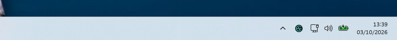

FICTIONAL-DATA DEMONSTRATION
Four views.
One shared reading.
A short tour of real Windows screenshots. These images use fictional readings captured with GlucoTick 0.8.7 in Windows Sandbox; this is not a live sensor connection. Current version: 0.8.10.
Compare the views and setup requirements →
01 / 04
Inside the Windows 11 clock

Windows 11 x64 and the optional validated Windhawk integration.
02 / 04
A large transparent number

Windows 10 / 11 x64. No Windhawk needed.
03 / 04
Glucose in the system tray

Windows 10 / 11 x64. No Windhawk needed.
04 / 04
The GlucoTick icon

Windows 10 / 11 x64. No Windhawk needed.
Keep your main FreeStyle Libre alarms active. The app is currently in Spanish.